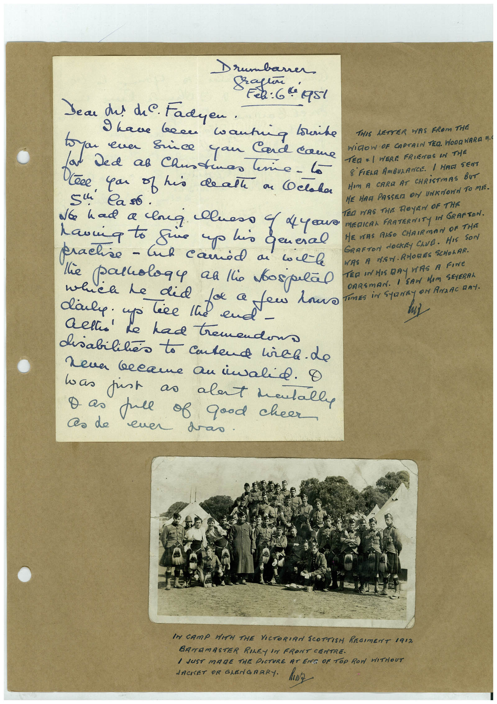

Book 1 · scan 083


Description
Transcription
Context
Review notes
Compare the machine draft with the scan. Handwriting and names need human review.
Artifacts
Edit the artifacts field in this note’s frontmatter to change these records. This summary is generated.
B01-S083-A01 — Letter, Photo & Handwritten note — Book 1, scan 083
Types: Letter, Photo, Handwritten note
Scope: Whole scanned page; individual items can be split out during review.
Caption: Not mapped yet.
Caption source: Not recorded yet.
Caption status: unmapped
Machine transcription
Drumbaner 2: 64951 Dear dul diC. Fadyen • 9 have been wantiq louike THIS LETTER WAS FROM THE WiROW OF CAPTAIN TER. WODQWARA 4 Ce you of his de all on COclaha TER = / WERE FRIENES IN THE 8 FIELA AmBULANCE. / HAGI SENT Sl Caso . No had a long luess 4 dye HOM A CARE AT CHRiSTmAS BUT HE HAG PASSER ON UNKNONN TO MIE. havia to fire up his general ED WAS THE ROYEN OF THE practice - Inh camid a vil-le MEDICAL FRATERNITY IN GRAFTON. HE VERS RISO CHAIRMAN OF THIS GRAFTON dOCKEY CLUB. HIS SON WAS A MAN. RHORES SCHOLAR. TED IN HIS DAy WAS A FINe OARSMAN. I SAM HIM SEYERRI TimES iN StarRy oN AndAc DAY. he had tremendon disabilities to Cutend hirel. do neva became an invalid. O was just as alant mentally Das full of good cheer As de euer das. IM CAMP WITH THE VICTORIAN SCOTTISH REGIMENT 1912 BATAMASTER RILEY IN FRONT CENTRE. I JUST MADE THE PICTURE AT EMS OF ToP RON WITHOUT JACKET OR GLENGRARY. ANZ